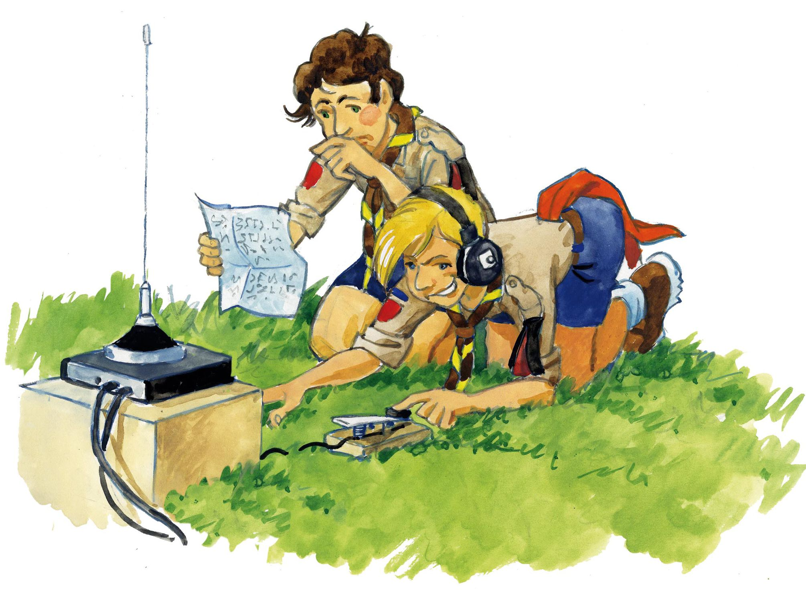

Les scouts de port-Marly
Créé au début des années 60, la 1ère Port-Marly a été la première unité marine des scouts d'Europe. Est arrivée ensuite la création de la 2ème Port-Marly en 1964...
Lire la suite

La spiritualité
Vous souhaitez inscrire votre enfant ? merci de remplir le formulaire de pré-inscription.
Lire la suite
La méthode
Le groupe de Port-Marly (AGSE) accueille les jeunes pour vivre l’aventure scoute : nature, responsabilité, progression personnelle et spirituelle, service.
Lire la suite